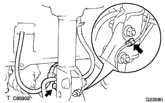

Front axle hub LH removal |
| 1. Remove the front tire |
| 2. Remove the front axle shaft nut LH |
 |
Set SST according to the groove of the drive shaft, and use a hammer to solve the kashime.
Use Soketsu trench (30mm) to remove the hub nut.
| 3. Speed sensor FR LH separation |
Remove the bolt and separate the speed sensor wire and flexible hose from the shock absorber ASSY.
|  |
Cut the clip from the shock absorber ASSY.
 |
Remove the bolt and separate the speed sensor FR from the steering knuckle.
| 4. Stabilizer bar cut separation |
 |
Fix the bolt with a spanner (10mm) and remove the nut.
Take two and two cushions and two cushions and separate the stabilizer bar.
| 5. Tie rod end sub-assy LH disconnection |
Remove the cotter pin and castle nut.
 |
Use SST to separate the tie rod end from the steering knuckle.
| 6. Front Dicek Brake Kiki ASSY LH Cut off |
 |
Remove the two bolts and separate the Dysque Brake Kikiki ASSY from the steering knuckle.
| 7. Remove the front disc |
Mark the disc and axle hub and remove the disk.
| 8. Front axle ASSY LH separation |
Use a plastic hammer to lightly hit the tip of the drive shaft ASSY and remove the shaft and axle asser.
Press the front axle ASSY to the outside of the vehicle and pull out the drive shaft ASSY from the axle ASSY.
| 9. Shock absorber ASSY FR LH separation |
 |
Remove two bolts and two nuts, and separate the shock absorber Assesy from the axle ASSY.
| 10. Front suspension arm SUB-ASSY LWR No.1 LH disconnection |
Remove the cotter pin and castle nut.
 |
Using SST, Rewer Arm No.Separate the ball joint part of 1 from the steering knuckle.